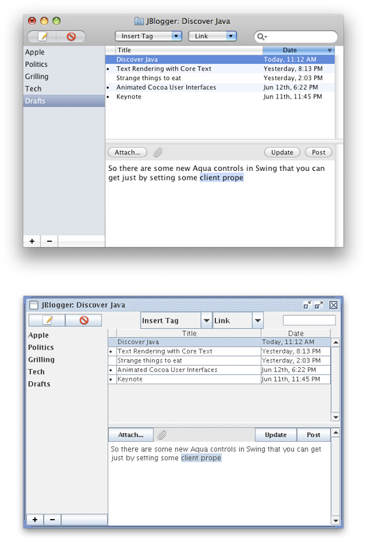

Overview of Java for Mac OS X
This article provides a broad overview of how Java fits into Mac OS X. It is suggested background information for anyone new to Java development for Mac OS X.
Contents:
Java and Mac OS X
Java, Built In
32-Bit and 64-Bit Java
The Aqua User Interface
Finding Your Way Around
The File System
Java and Mac OS X
The complete Java implementation in Mac OS X includes the components you would normally associate with the Java SE Runtime Environment (JRE) as well as the Java SE Development Kit (JDK). More details about JDK in Mac OS X are provided in “Java Deployment Options for Mac OS X.”
The following sections give a high-level overview of how Java for Mac OS X is different from Java for other platforms.
Java, Built In
“Write once, run anywhere” is true only if Java is everywhere. With Mac OS X, you know the JRE is there for your Java applications—the Java runtime is built into the operating system. This means that when developing Java applications for deployment on Mac OS X, you know that Java is already installed and configured to work with your customer’s operating system.
Java is the only high-level framework on Mac OS X besides Cocoa that provides a graphical toolkit for building applications. With just a little work on your part, Java applications can be nearly indistinguishable from native applications. Information on how to achieve this is provided in “Mac OS X Integration for Java.” Users don’t need to learn different behaviors for Java applications—in fact, they shouldn’t even know that applications are Java applications.
Apple provides multiple versions of Java built into Mac OS X to offer your customers the widest range of compatibility with your applications. You are encouraged to create applications that target the oldest possible Java version but launch with the newest available version. In this way, you accommodate the largest possible audience, and at the same time take advantage of the speedups and operating system integration that later versions afford.
Note: There is no redistribution license for Java in Mac OS X. If your customers need a specific update of the Java runtime and they do not have it, they should get it directly from Apple via Software Update or the Apple Support page at http://www.apple.com/support/.
32-Bit and 64-Bit Java
Mac OS X v10.5 includes both a 32-bit and a 64-bit version of J2SE 5.0, along with a 64-bit version of Java SE 6. It is important to note that certain Apple APIs, such as QuickTime for Java (QTJ), are compatible only with 32-bit versions of Java. Similarly, considerations should be made when writing Java Native Interface (JNI) libraries, because the architecture of the library must correspond to the version of the code you are interfacing with.
The Aqua User Interface
Anyone who has run a GUI-based Java application in Mac OS X is bound to notice one of the most striking differences between Java on Mac OS X and Java elsewhere. Figure 1 shows this distinction by showing the cross-platform look and feel in Mac OS X, which is essentially the way the user interface looks on other platforms, and the Aqua look and feel.
Figure 1 Apple’s Aqua look and feel and the standard Java cross-platform look and feel in Mac OS X
By default, Swing applications in Mac OS X use the Aqua look and feel (LAF). Although this is the default LAF, it is not required; the standard Java cross-platform LAF is also available. While the use of the Aqua LAF is encouraged for Swing applications, different design philosophies inherent in an application might make the Aqua LAF inappropriate. To use the cross-platform LAF, modify your code to include UIManager.setLookAndFeel(UIManager.getCrossPlatformLookAndFeelClassname()). Further details on the Aqua LAF are provided in “User Interface Toolkits for Java.”
Finding Your Way Around
One of the first hurdles newcomers to Java development on Mac OS X face is figuring out where everything is on the platform. This section outlines some basic things to remember and offers some guidelines to follow when navigating the Mac OS X filesystem.
Since Java is built into the operating system, it is implemented as a Mac OS X framework. For more information on frameworks, see Framework Programming Guide. The code that makes the Java implementations in Mac OS X work can be found in /System/Library/Frameworks/JavaVM.framework/. That directory contains one directory, Versions/, and some symbolic links to directories inside the Versions directory. The layout of the JavaVM.framework directory is designed to accommodate design decisions from previous versions of Java, as well as to support future versions of Java. By default, the CurrentJDK symlink points to the 1.5.0 directory. This is where the code that actually implements J2SE 5.0 resides.
Although the purposes of the files within the JavaVM.framework directory are interesting from the perspective of how Java is implemented in Mac OS X, you should consider the contents of the directory opaque for both you and your customers. Additionally, do not rely on a particular path within the JavaVM.framework directory in any code that you ship to customers, because the directory’s contents will change with updates to Java and the operating system.
The Java Home Directory
Some applications look for Java’s home directory ($JAVA_HOME) on the user’s system, especially during installation. If you need to set this explicitly in a shell script or an installer, set it to /Library/Java/Home/. Setting it to the target of this symbolic link can result in a broken application for your customers down the road, when Apple ships a software update that changes the default version of Java, or when the user moves the application to another version of Mac OS X which has a different default version of Java. Programatically you can use System.getProperty("java.home"), as you would expect.
/Library/Java/Home/ also contains the bin/ subdirectory where command-line tools like java and javac are found. These tools match the default version of Java for the system as defined by Apple. Additionally, the Java tools available on the default path in /usr/bin will dynamically target the top preferred version of Java that the user has chosen for applications in the Java Preferences application.
Java Extensions
Java can be extended by adding custom.jar, .zip, and .class files, as well as native JNI libraries, into an extensions directory. On some platforms this is designated by the java.ext.dir system property. In Mac OS X, put your extensions in /Library/Java/Extensions/. Java automatically looks in that directory as it is starting up the Java Virtual Machine.
Putting extensions in /Library/Java/Extensions/ loads those extensions for every user on that particular computer. If you want to limit which users can use certain extensions, you can put them in the ~/Library/Java/Extensions/ directory inside the appropriate users’ home directories. By default, that folder does not exist, so you may need to make it.
Output from Java Programs
When you launch a Java application from the command line, standard output goes to the Terminal window. When you launch a Java application by double-clicking it, your Java output is displayed in the Console application in /Applications/Utilities/. Applets that use the Java Plug-in display output in the Java Console if the console has been turned on in the Java Preferences application (see “Other Tools” for information on Java Preferences.).
The File System
The default file system of Mac OS X, HFS+ (Mac OS Extended format), is case-insensitive but case preserving. Although it preserves the case of files written to it, it does not recognize the difference between uppercase and lowercase. You should make sure that no files in the same directory have names that differ only by case. For example, having a file named mybigimage.png and MyBigImage.png in the same directory can create unpredictable results. Note that while most UNIX-based operating systems are case-sensitive, Windows is case-insensitive so this is a general guideline for any cross-platform Java development.
Note: Mac OS X versions 10.4 and 10.5 allow HFS+ volumes that are fully case-sensitive. Since this is only an option that is chosen at install time and the traditional behavior described above is the default, do not rely on case-sensitivity.
Details about how HFS+ relates to character encoding can be found in “Character Encoding.”
© 2003, 2008 Apple Inc. All Rights Reserved. (Last updated: 2008-10-15)